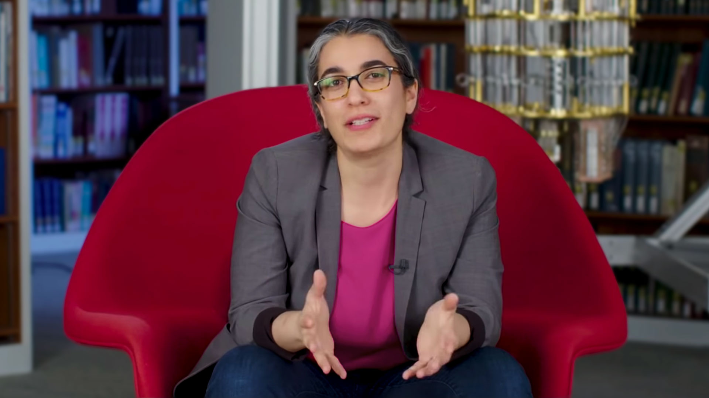
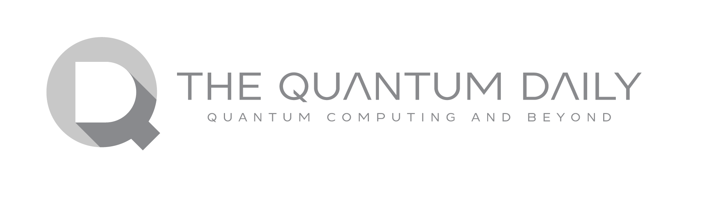
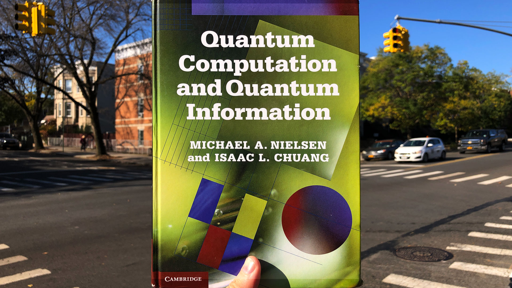
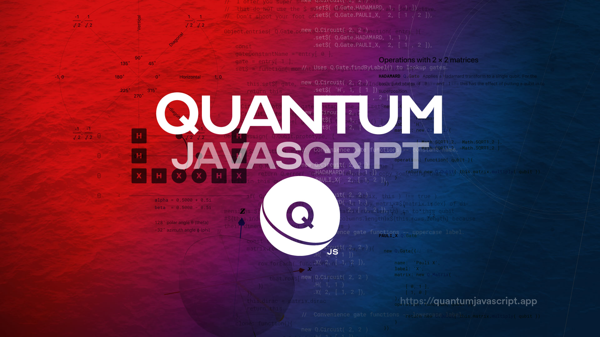

Gentle introductions
You’ve heard the term “quantum computing” but you’re not sure what it means. (And what does a quantum computer even look like?) Don’t be afraid. Start with these gentle introductions.
What is a quantum computer?

https://youtu.be/OWJCfOvochA
Dr. Talia Gershon is the director of research strategy and growth initiatives at IBM.
In this twenty-minute video for WIRED Magazine (2018)
she expertly explains quantum computing
to five levels of understanding—personified by a child,
teen, undergrad, grad student, and a field professional.
She also refers to an actual quantum computer apparatus
that she’s brought with her to these dialogues.
I have great respect for the art of explaining complex subjects
in a way that makes them intuitive
without losing the truth of the subject.
Dr. Gershon makes this tough task look easy.
Dr. Talia Gershon on LinkedIn
Dr. Talia Gershon on Twitter
Quantum concepts, the easy way
You don’t need a PhD in quantum physics to play with quantum computing. After all, this computer you’re reading from doesn’t understand quantum physics. Instead, it merely plugs together a few basic concepts in order to simulate quantum computation. Each of the following documentation pages focus on one of the conceptual building blocks used to create Q.js. Taken together (and in this order) they’ll teach you everything you need to know to get started. Haven’t done math like this since high school? That’s ok. These are gentle refreshers.
Since the above pages also serve as documentation for the Q.js code API you may notice some code examples sprinkled into these primers for added clarity. Code not your thing? That’s ok too. It won’t hinder you to skip over those bits. For each page the concept primers end and the API documentation begins with the heading titled Constructor. (From there onwards it’s all about the code.)
The Quantum Computing talk

https://www.smbc-comics.com/comic/the-talk-3
Cartoonist Zach Weinersmith teams up with Scott Aaronson,
director of the Quantum Information Center
at the University of Texas at Austin,
to produce “The Talk” (2016)—a one-off comic that is both humorous and informative.
It also takes gentle swipes at pop science’s
mangled metaphors for explaining quantum phenomena.
Remember, parents: “If you don’t talk to your kids about quantum computing
someone else will.”
Scott Aaronson’s website
Zach Weinersmith on Twitter
Quantum communities
The Quantum Daily

https://thequantumdaily.com
The Quantum Daily (TQD) is the
leading online information and data platform
dedicated exclusively to Quantum Computing.
TQD provides incisively written articles,
information on quantum computing companies,
market research and more.
Help—I am a programmer.
Ok, so you’re no stranger to variables, basic algebra, and banging your head against a keyboard. It turns out that’s all you need to get started.
Andrew Helwer’s “Quantum computing for computer scientists” lecture for Microsoft Research (2018)

https://youtu.be/F_Riqjdh2oM
Named after the book of the same title—a book
Andrew reveres—this lecture explains qubits as matrices,
gate operations as matrices,
superposition,
and demonstrates an example of quantum computing’s
exponential power over classical computing.
This is the video that inspired me to build Q.js.
I’ve watched it about 100 times,
and each time I’m able to gleen a sliver of new insight.
Lecture slides
Entry on Microsoft Research’s portal
Andrew Helwer on LinkedIn
Noson Yanofsky and Mirco Mannucci’s “Quantum Computing for Computer Scientists” (2008)

Don’t have a degree in maths or physics—but know how to code?
This book is for you!
Noson and Mirco explain quantum computing
in terms you’ll grok.
I highly recommend it.
Entry on Cambridge University Press
Entry on Google Books
Purchase from Amazon
Purchase from Barnes & Noble
Purchase from Target
Michael Nielsen and Isaac Chuang’s “Quantum computation and quantum information” (2000, 2010)

http://mmrc.amss.cas.cn/tlb/201702/W020170224608149940643.pdf
This tome is a must-have, foundational book for quantum computing.
Beware: It is full of maths symbols.
As such I’ve found it useful to breeze-read through some sections,
totally unconcerned about if I’m truly absorbing the material or not.
Then to go back and read it again.
And again.
And yet again.
And so on.
By employing this unanxious repetition across days / moods / contexts it is almost by accident that the puzzle pieces begin to join and the picture comes in to focus.
Useless trivia:
It’s been nick-named “Mike & Ike” in honor
of the authors and the candy.
Entry on Wikipedia
Entry on Google Books
Purchase from Amazon
Purchase from Barnes & Noble
Purchase from Target
Particulars
Gwilym Newton’s “Playing with the Bloch Sphere” blog post (2019)
https://quantumcomputing.stackexchange.com/questions/4720/what-circuit-or-operation-corresponds-to-the-tensor-product
Published just days after I began work on Q.js,
this blog post by Gwilym Newton of IBM solved a problem I was banging my head against the wall over:
How to properly convert a qubit’s
alpha
and
beta
properties in to phi and theta angles!
If you’re building your own
Bloch Sphere visualizer
you’ll notice this is surprisingly difficult to find code examples of.
Gwilym’s description helped me out.
Gwilym Newton on IBM Blogs
Gwilym Newton on LinkedIn
Gwilym Newton on Twitter
Quantum JavaScript (Q.js)
Q turns 1 (Medium)

https://medium.com/@stew_rtsmith/quantum-javascript-d1effb84a619
A post written on the occasion of Q’s first birthday.
Q source code (GitHub)
https://github.com/stewdio/q.js
Q.js is open-source—and you can join right in!
Download the code. Contribute to it. Fork it.
Because the repo is the
documentation / examples / concept primer / source code,
everything exists at this one location.
Q documentation and tools
https://quantumjavascript.app
This very site that you are reading right now.
#Qjs on Twitter
https://twitter.com/stew_rtsmith/status/1123415441915957250
The original Q.js Twitter thread started
in April 2019 with a clumsy ASCII diagram of a
Hadamard matrix.
From there the thread documents the
twists and turns of Q.js as it continues to evolve.
Let’s use the hashtag
#Qjs, eh?
Stewart Smith, Q creator
http://stewartsmith.io
Hi, I’m Stewart.
I do other things besides attempt to teach myself quantum computing.
I’ve been educated as a graphic designer and fine artist,
but began coding at an early age.
I’ve worked for the big tech companies,
created artworks for museums and galleries around the world,
and have spent the last few years
creating tools for virtual reality.
(That looks way more glamorous in writing than it is in real life.)
I live in Brooklyn NY with my family and will never move to San Francisco ;)
Stewart Smith’s website
Stewart Smith on Twitter
Stewart Smith on LinkedIn
Stewart Smith on GitHub
Stewart Smith on Medium